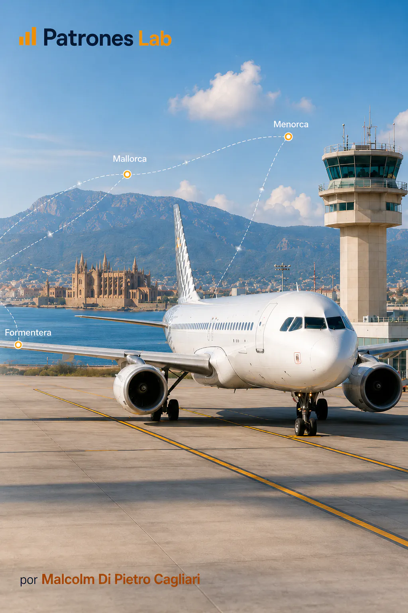
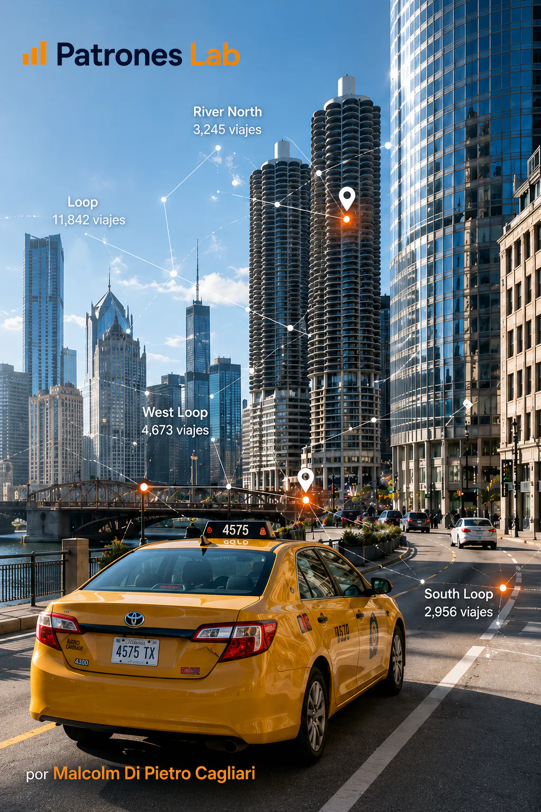
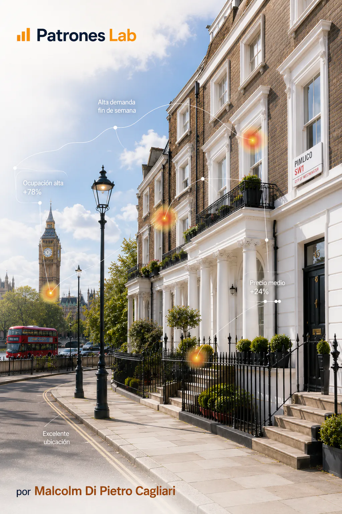

Vuelos en las Islas Baleares
Análisis de tráfico aéreo en España con datos públicos de AENA, con foco en volúmenes, patrones por aeropuerto y diferencias entre categorías.

Análisis de tráfico aéreo en España con datos públicos de AENA, con foco en volúmenes, patrones por aeropuerto y diferencias entre categorías.
Análisis de viajes de taxi en Chicago para estudiar duración, demanda, distribución geoespacial y patrones operativos.

Análisis geoespacial de viajes de taxi en Chicago, orientado a detectar zonas de mayor actividad, recorridos urbanos y concentración territorial de la demanda.

Análisis exploratorio de Airbnb en Londres para comparar precios, tipos de alojamiento, disponibilidad, estancias mínimas y diferencias entre barrios.
Análisis geoespacial de precios Airbnb mediante distancia al centro, barrios y métricas de vecindad geográfica.